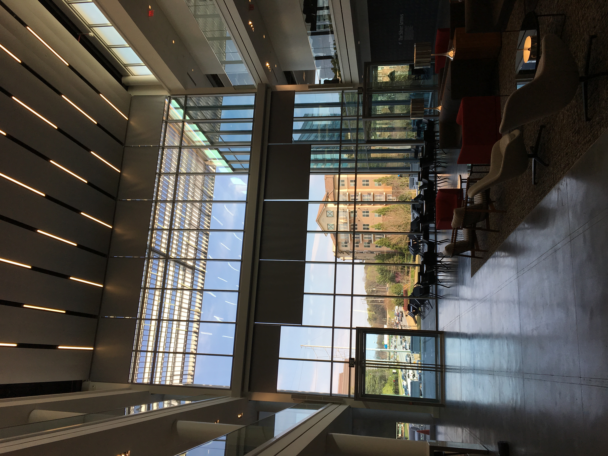

Skin Screening: Image Processing
This project is about image processing: resizing images, converting to greyscale, and creating a machine-readable dataframe to run predictions on. More to come here.
View the Medium articleData scientist, NYC
Working at the intersection of business, data, and technology.
Hi there and welcome. I started building this page to showcase projects I'd like to share — and also to learn some HTML. I try to explain my projects and the steps I take in detail, since I know how confusing it can be to look at random code snippets without any description.
It's been quite a journey for me, transitioning from a supply chain / business intelligence background into data science and analytics, so I hope this is helpful for other aspiring data scientists and analysts too. I work at the intersection of business, data, and technology: my business analytics program gave me the stats and coding skills that I've enhanced with business knowledge to solve complex business problems. Understanding the business problem is often the most challenging part, but it's crucial before starting any analysis — only with a clear goal in mind can analytics turn into insight, and insight into impact on strategy and operations.
Currently, I work as a data scientist in NYC after a longer stint in the Bay Area. I really enjoyed spending a lot of time outdoors exploring the city and nature out there — but weekly hiking has since changed to comedy clubs and Broadway shows. Still on the hunt for a local DS and tech community as tight-knit as the one I found in the Bay!
Cheers,
Phil
Data Scientist, Research and Product
I've worked across different teams and a wide range of topics and products. Initially in AI infrastructure, I developed metrics in feature engineering for trunk health and privacy requirements. Later, as a product data scientist, I worked on Facebook's video teams, analyzing creator incentives and user preferences around video, along with some PREQ work. I enjoyed the more technical work and switched to the calling org supporting quality initiatives, where I now help improve bandwidth estimation models, sharpen user targeting for new feature rollouts, and build out measurement in the space.
AI and Data Scientist, Technology Consulting
As a data science consultant, I conducted research comparing tools across big data and advanced analytics. On my last engagement, I supported a client in customer analytics — performing cross-shopping analysis and developing cohort analysis across 10k+ cohorts using Hive and Databricks. I also helped the client set up k-means clustering for products, paired with a random forest to predict cluster names for future runs.
Business Intelligence Analyst, Customer Services
I led a logistics project to improve forecast accuracy, reduce cost, and increase parts availability for 400+ dealerships in the US. I analyzed 100,000+ purchase orders for errors, tracked patterns, and systematically resolved individual defect orders. The deliverables included sustainable fixes for the ERP system and KPIs to continuously monitor data quality, plus a data-quality enhancement process mature enough to be rolled out to other markets. I used these findings, and further research, for my master's thesis, "Data Integrity in Supply Chain Management."
Strategy and Management Consulting Intern, Energy and Utilities Division
Advisory Intern, Technology Enablement
Business Intelligence Analyst, Customer Services
Master of Science in Business Analytics
A very technical program taught in the business school, combining business, data, and technology. Topics covered included:
The program was very applied, which helped me gain coding and statistics skills as well as further technical depth, for example in distributed computing.
Master of Science in Industrial Engineering and Management
An advanced program building on the bachelor's degree, covering Business Administration and Engineering Sciences alongside Informatics and Operations Research.
Global Study Program
A special program for international students with free access to all courses on campus. I attended courses in public speaking, international microeconomics, and operations research.
This project is about image processing: resizing images, converting to greyscale, and creating a machine-readable dataframe to run predictions on. More to come here.
View the Medium articleThe database contains house prices and features like size, number of bed/baths, and whether there's a fireplace. The R Markdown walks through data exploration, cleaning, and transformation, through to developing several models.
View R HTML fileI'm not trying to end the careers of every SQL tutorial out there, but: I don't think SQL is usually meant as an analysis or data science tool, more of an ETL tool. Further analysis happens through tools like R or Python — so the focus here is mainly on loading the right data in the right format.
View Jupyter HTML fileA handy function for initial data exploration — checking the number of unique values per column, and the share of NAs and zeros. This helps determine whether a column is useful and actually contains enough valid information for model building.
View R HTML fileSome of the visualizations and dashboards I created during my master's program.
Salaries of College Grads — what matters most? FIFA 19 Dashboard — comparison and recommendation Population, pollution, and energy consumption
We look at reviews of popular tech companies and try to predict the company based on the review text. Eventually this could work as a recommender — letting a model predict which company you should apply to.
View Jupyter HTML fileEngineering at Meta
Co-authored with the Meta RTC video engineering team. A look inside Meta's multi-year effort to bring the AV1 codec to real-time video calls across Messenger and WhatsApp — covering low-complexity encoder design, ML-based device eligibility, adaptive codec switching between AV1 and H.264, rate control, and error-resilience techniques for keeping calls smooth under shaky networks and packet loss.
Read on Engineering at MetaMedium
House-price prediction is the textbook case with a clean target to train against. Real problems, like picking the right bitrate for a video call, often don't have one. This piece walks through how to make progress anyway: mining proxy signals from early connection behavior, anchoring to industry benchmarks where a direct label doesn't exist, and using post-deployment feedback to keep refining the model.
Read on MediumMedium
A walkthrough of a basic image-processing pipeline: resizing images, converting them to greyscale, and assembling the results into a model-ready dataframe.
Read on Medium